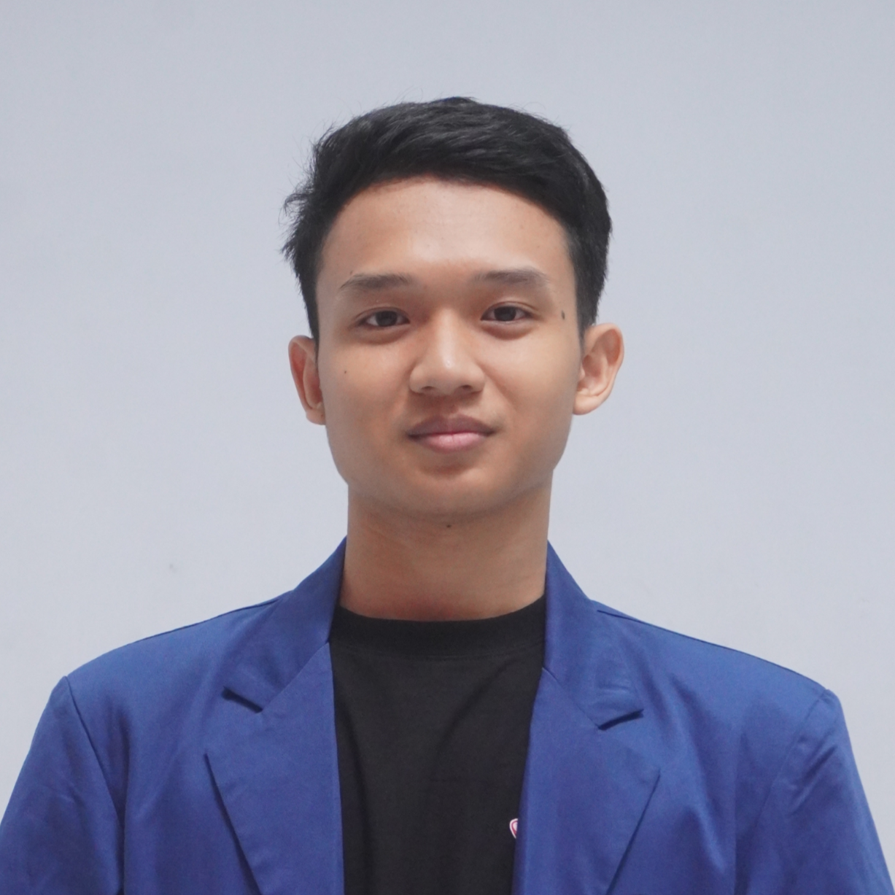

Institut Teknologi Sepuluh Nopember (ITS)
2025 – SekarangS1 Teknik Informatika | IPK: 4.00 / 4.00
"Never stop learning, because life never stops teaching."

Saya adalah mahasiswa S1 Teknik Informatika di Institut Teknologi Sepuluh Nopember (ITS) Surabaya. Memiliki rekam jejak akademik yang kuat serta minat mendalam pada pemrograman web dan manajemen data. Aktif berorganisasi dan selalu bersemangat mempelajari teknologi baru untuk menciptakan solusi digital yang bermanfaat.
Skillset :
HTML, CSS, JavaScript, TypeScript, C, C++, C#, SQL
S1 Teknik Informatika | IPK: 4.00 / 4.00
IPA & Ekonomi | Nilai Akhir: 92.11 / 100
Member
Staff Data Management
Staff IT
Head of Operations
Graphic Design Division
Head of Christian Spiritual Division
Head of Physical & Mental Health Division
President
Studied basic web development and software project collaboration.
Learned the basics of AI, simple machine learning, and ethical implementation.
Focused on data analysis fundamentals and data visualization.
Covered front-end and back-end web development, including frameworks and deployment.
Sistem pencatatan digital bagi sekolah untuk mengelola perkembangan karakter, prestasi, dan pelanggaran siswa secara terstruktur.
Platform web Sudoku modern untuk bermain solo maupun duel langsung bersama teman secara real-time dengan statistik pertandingan.